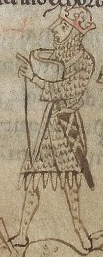

Stephen and Matilda
A cousin grabs the crown, an empress fights back — and England falls into "the Anarchy".
England · Reigned 1135–1154 · Stop 20 of the odyssey
← Learning from the Past: An English Odyssey · ← Henry I · Henry II →

- What happens when two people both think a job is theirs?
- Can kindness be a weakness in a leader?
- Why might people refuse to accept a woman as ruler in the 12th century?
The words for today's story
Each new word is hidden in a sentence. Read it aloud and say what you think the bold word means from the rest of the sentence — then reveal it and see how close you were.
Now use them — out loud
- Using any four of these words, predict: what kind of reign do you think this will be — and how might it end?
- Which words belong to power and which to danger? Sort them out loud and say why.


Credit: Henry of Huntingdon (Historia Anglorum), credited creator · via Wikimedia Commons, Public domain
The story, in three parts
Read each part. After it, there's a quick comprehension check (try the questions from memory first), then one thing to discuss.
Part 1 — A race for the crown
Henry I had made his barons swear to accept his daughter Matilda. But when he died in 1135, his nephew Stephen of Blois sailed quickly from Boulogne, won the support of London and the Church, and was crowned.
Many barons preferred a man, and Matilda was in Anjou with her husband, Geoffrey, whom many Normans disliked.
1. How did Stephen become king?
2. Why did many barons accept him?
1. He moved fast, won London and the Church, and was crowned.
2. They preferred a male ruler and disliked Matilda's husband.
- Is speed more important than right?
Part 2 — The war
In 1139 Matilda landed in England. In 1141 her forces captured Stephen at Lincoln, and she came close to being crowned. But her arrogance, according to her enemies, angered the Londoners, who drove her out. Stephen was later exchanged for her half-brother Robert of Gloucester.
In December 1142 Stephen besieged her in Oxford Castle. According to the chronicles, she escaped by night, dressed in white, across the frozen Thames.
1. What happened in 1141?
2. How did Matilda escape Oxford?
1. Stephen was captured at Lincoln, but Matilda was driven out of London.
2. By night, in white, across the frozen river.
- Why might chroniclers describe Matilda as arrogant?
Part 3 — The compromise
Neither side could win. Barons built castles and fought each other; the Anglo-Saxon Chronicle wrote that people said "Christ and his saints slept". Some historians think the chaos has been exaggerated.
In 1153 Stephen, whose son Eustace had died, agreed at Wallingford that Matilda's son Henry would inherit. Stephen died in 1154, and Henry II became king.
1. How did the war end?
2. What did people say about the chaos?
1. Stephen agreed that Matilda's son Henry would inherit.
2. That "Christ and his saints slept".
- Was the compromise a defeat or a wise choice for Stephen?
Grammar — Contrast — Although, Despite, However
Few rulers were simply good or bad. To hold two truths at once, English uses contrast linkers.
• although / even though + clause: "Although he was brave, he was a poor king."
• despite / in spite of + noun or -ing: "Despite losing the battle, he won the war."
• however starts a new sentence, followed by a comma.
1. Choose the linker
Complete each sentence about Stephen and Matilda. Use the word in brackets.
1. Stephen had sworn an oath, he took the crown.
2. being captured, Stephen became king again.
3. Matilda nearly won. , London drove her out.
1. Although
2. Despite
3. However
2. Rewrite with the linker given
1. Stephen was brave. He was indecisive. (although)
2. She was the heir. Many barons rejected her. (despite)
3. The war was long. Neither side won. (however)
1. Although Stephen was brave, he was indecisive.
2. Despite being the heir, she was rejected by many barons.
3. The war was long. However, neither side won.
Hold on to this — you'll need it in the Speak tab.
Going deeper
The Anarchy shows how a broken promise and a disputed succession can divide a kingdom for nearly twenty years. Matilda never became queen, but her son founded the Plantagenet dynasty.
- Who had the better claim?
- Why do some conflicts end in stalemate?
- When did you accept a compromise?

Stop 20 on the journey → nose. In the Major System Palace, 20 is spelled with the sounds n-z, which make nose (a big cartoon nose).
Picture a red nose peeking out from Matilda's white hood as she escapes across the snow — stop 20.
You don't need the system to follow the story — it's simply a hook that lets you walk the whole odyssey, king by king, in order.
Speak
This is the heart of the lesson — do all of it out loud. The timer is there to keep you going: fill the time with detail rather than escaping it.
Tell the story of Stephen and Matilda in your own words, as if to someone who has never heard of them. Move through the arc: the oath and the race → war and capture → the escape across the ice → the compromise.
Use today's grammar at least three times, and work in at least five key words (empress, usurp, oath, the Anarchy, besiege, escape, chivalrous, stalemate, compromise, adopt).
"A compromise is better than a victory." Agree or disagree.
Tell a story from your own world — work, family, the news — that echoes this reign. Stuck for an idea? Pick one of these and run with it:
- A dispute at work or in your family.
- A narrow escape.
- A deal that ended a long conflict.
- A broken promise.
To finish — the bigger questions
- Who was the better ruler?
- What fight should you end with a compromise?
- Before you go — from memory: give two sentences about Stephen and Matilda using Contrast — Although, Despite, However, and say what lesson from this reign you could use this week.
← Learning from the Past: An English Odyssey · ← Henry I · Henry II →